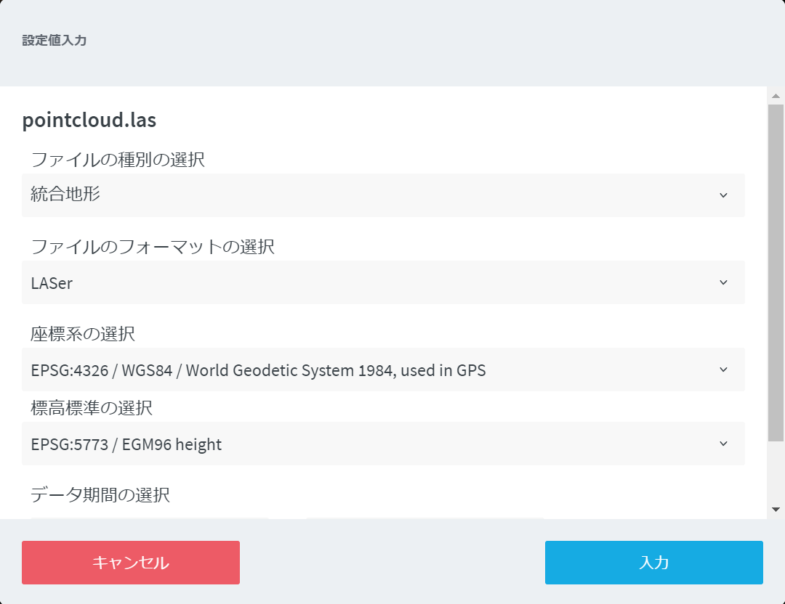
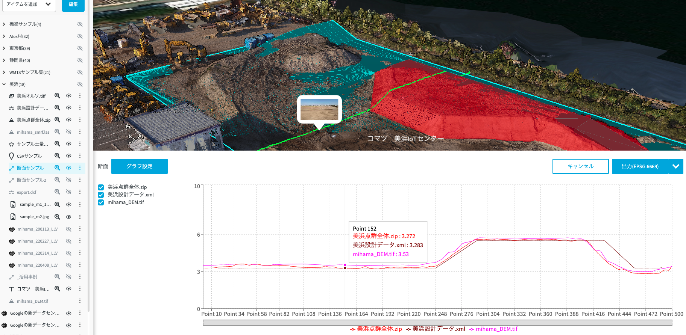
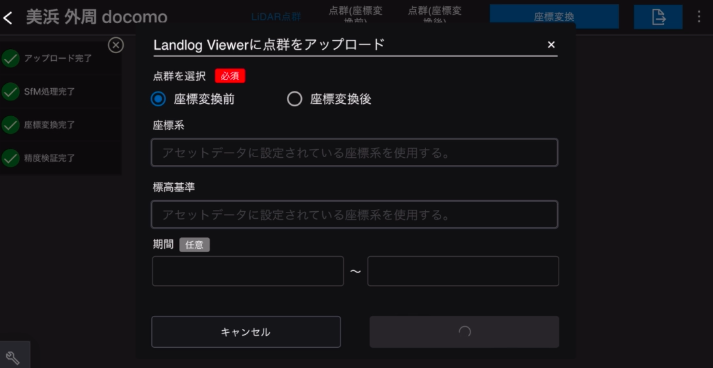

Landlog Viewer 機能一覧（2023年4月版）¶
1. ログイン¶
-
LandlogViewerを購入した後、下記にアクセスします。
-
Landlogアカウントのメールアドレスとパスワードを入力し、ログインしてください。
2. 現場¶
現場のインポート¶
LandlogのJobSiteSettingsで登録した現場と連携が可能です。下記の手順で現場のインポートを実施します。
- ログイン後、現場選択モーダルが表示されたら「現場のインポート」ボタンを選択します。
- JobSiteSettingsに登録済みの現場の一覧が表示されます。一覧の中から使用する現場を選択し、「インポート」ボタンを選択してください。 ※1件も表示されていない場合、「新規作成」ボタンを選択し、JobSiteSettingsから現場の新規登録を実施してください。
現場の選択¶
- インポートを実行後、現場一覧モーダルにて現場を選択するとLandlogViewerの画面が開きます。
現場の削除¶
- 「削除」ボタンを選択すると、インポートした現場を削除することが可能です。
- インポートし直すことでもう一度現場を利用することはできますが、登録したデータは全て削除されます。
現場公開設定¶
- サイドメニューの「公開設定」アイコンから、現場に登録しているアイテムのビューの公開や、データそのものの公開が可能です。
3. マップ設定¶
- メニューからマップ表示の設定を変更することが可能です。
- 設定項目: マップ表示・ベース地形・地図の種類・レンダリング品質・地形透明度・等高線表示・日照設定
マップ表示¶
- 表示地形を変更できます（3D/2D）。
ベース地形¶
- 国土地理院基盤地図情報数値標高モデルとCesium World Terrainとを切り替えることができます。
- また、アセットのアップロード機能から地形データ（geotiff）を統合地形としてアップロードすることで、お持ちのデータをベース地形として設定することが可能です。
地図の種類¶
- 表示する地図の種類を変更することが可能です（衛星 / 道路 / 地形図）。
レンダリング品質¶
- マップ表示の解像度を変更できます。LandlogViewerの動作が重い場合はレンダリング品質を低にすることで改善できることがあります。
地形透明度¶
- 地形の透明度を変更できます。
- 「透明度のフェード」にチェックをつけると、地表にズームした時のみ地形が透明になります。
- 「地形の下にあるアセットを透過表示しない」にチェックをつけると、地形より上に位置するアセットのみ表示されます。

等高線表示¶
- 地図上に投稿線が表示されます。間隔と線の色を設定可能です。
日照設定¶
- 日照設定の操作ができます。任意の日時の日照を再現します。月日を変更すると、季節による日照の変化も確認できます。
4. ビュー設定¶
LandlogViewerではビュー（カメラの視点）やアイテムの表示状態に関する情報を保存することが可能です。
ビューポイント機能¶
- 現在のカメラの視点を保存できます。
- 保存直後は登録したユーザのみがビューポイントを使用可能です。
- 保存したビューポイントのメニューから「共有」にチェックを入れることで、他のユーザもビューポイントを使用可能になります。
- また、「共有」にチェックを入れることで、現場公開画面を利用する外部ユーザにも共有することが可能です
アニメーション機能¶
- 作成したビューポイントをつなぎ合わせてアニメーション作成し、地形や構造物の状況を、毎回同じ視点から俯瞰的に確認することが可能です。
- 保存直後は登録したユーザのみがアニメーションを閲覧可能です。

- 作成したアニメーションに対して、アニメーションとして利用するビューポイントを追加します。
- ここでは、下記設定値を変更可能です。
- アニメーションの名称
- ビューポイントの再生順序
- ビューポイント間の移動時間
- ビューポイントをアニメーションから削除(アニメーションに紐づかないビューポイントとして残存します)
- アニメーションに紐づいていないビューポイントをアニメーションの一覧に追加（その場でビューポイントを追加することも可能です）
- アニメーション一覧から、アニメーションの再生ボタンを選択すると再生が始まります

- 保存したアニメーションのメニューから「共有」にチェックを入れることで、他のユーザもアニメーションを使用可能になります。
- また、「共有」にチェックを入れることで、現場公開画面を利用する外部ユーザにも共有することが可能です
アイテム表示状態の保存¶
- アイテムの表示・非表示の状態を保持し、閲覧したいデータセットを呼び出すことが出来ます。
- 保持したい表示設定にした状態で保存ボタンを押すことで、その際に表示されている状態を保存します。
- 保存直後は登録したユーザのみが確認可能です。
- 表示状態の一覧から保存した状態を選択すると、その際に表示していた表示状態を復元します

- 保存した表示状態のメニューから「共有」にチェックを入れることで、他のユーザも表示状態を呼び出し可能になります。
- また、「共有」にチェックを入れることで、現場公開画面を利用する外部ユーザにも共有することが可能です
5. アセット¶
- LandlogViewerでは下記のファイルをアップロード可能です。 ※対応ファイル形式は随時追加されます。
| ファイル種別 | 拡張子 |
|---|---|
| LASer | .las/.laz/.zip(複数のlasファイルを格納したZIPファイル) |
| LandXML | .xml/ |
| DXF | .dxf |
| CityGML | .citygml/.gml/.zip |
| KML | .kml/.kmz |
| SHAPE | .zip(.shp/.shx/.dbfを格納したZIPファイル) |
| CZML | .czml |
| GeoJSON | .geojson/.topojson/.json |
| 3DTiles | .zip |
| Filmbox | .fbx (一部) |
| IFC | .ifc（mm単位のデータには対応しておりません） |
| DWG | .dwg (3Dデータに限る) |
| JPEG | .jpg/.jpeg |
| TIFF | .tiff/.tif/.zip |
アセットのアップロード（共通）¶
- サイドメニューの「アイテムを追加」から「ファイルを追加」を選択し、アップロードするファイルもしくはフォルダをドラッグ&ドロップします。
- 各ファイルに対して下記設定値等を入力し、「アップロードを開始」ボタンを選択してください。
- ファイル種別の選択
- 統合地形: 点群データやDEMデータ（Geotiff）等をアップロードする際に選択します
- 画像: オルソモザイク画像（Geotiff）等をアップロードする際に選択します
- 設計ファイル: dxfやLandXML等の設計データをアップロードする際に選択します
- 3Dモデル: 3DTilesやFBX等の3Dモデルデータをアップロードする際に選択します
- オーバーレイ: KMLやSHAPE, GeoJSON等をアップロードする際に選択します
- 写真: カメラで撮影した写真（JPG）をアップロードする際に選択します
- ファイルフォーマットの選択
- 座標系の選択
- 標高標準の選択
- データ期間の選択
- データを表示したい期間を設定することにより、タイムライン機能において当該期間のみデータを表示させることが可能です。
- これによって、施工ステップの検討や地形変化等を確認可能となります。
- ファイル種別の選択

- アップロードしたファイルはCesiumIONにアップロードされ、データ変換が行われます。
- LandlogViewerでは、サイドメニュー下部のラベルを選択するとアップロード状況及びデータ変換の進捗を確認できます（アップロード中はブラウザを閉じないようにしてください。データ処理が開始したら閉じても処理が進行します。）

- データ変換が完了したら、サイドメニューにアセットが表示されます。
- アセットの行の「表示」ボタンを選択することでマップ上にデータが表示されます。
- データが見つからない時などは、「ズームボタン」を選択することでマップ上のアセットの位置に視点を移動することが可能です。
- アセットのメニューボタンからアセットの表示名とデータ期間を変更可能です。
- その他、アセットメニューの「ダウンロード」を選択することでアセットのダウンロードが、「削除」を選択することでアセットの削除が可能です。
- また、アセットの表示透明度を変更可能です。アセット名を選択します。アセットが重なっている場合などに有効です。
アイテムの整理（一括削除）¶
- サイドメニューの「編集」を選択すると、アップロードしたアイテムを手動で整理することが可能です。
- 例えば、「新規フォルダの作成」を選択すると新しいフォルダを作成でき、アイテムや別のフォルダをドラッグ&ドロップすることでフォルダ内外へ移動できます。
- また、複数のアイテムを選択した状態で、サイドメニュー下段の領域へドラッグ&ドロップすると、複数のデータを一括削除できます。

アセットの表示位置変更¶
- アセットメニューの「アイテムの編集」を選択すると、地図上でアセットの表示位置を変更出来ます（平行移動・回転・拡大縮小が可能です）

- 位置を変更したアセットに関しては、サイドメニューに位置が編集されたアセットであることが表示されます
- 変更した位置を元に戻したい時は、編集画面から座標脇にある「リセット」から元の位置・形状に戻すことができます
データ固有の設定（DEMアップロード）¶
- DEM(DTM)情報を持つGeotiffをお持ちの場合、Landlog Viewer内の地形として登録することが可能です。
- ファイルの種別として「統合地形」を選択し、統合元となる地形データを選択します。
- 左図は国土地理院より取得したDEMデータを表示しており、平らな見た目をしていますが、右図のように実際の地形に近い形で地形情報が更新されます
- この設定は、地図設定のベース地形から選択することが可能です
データ固有の設定（FBXアップロード）¶
- FBXアップロードに関しては、現在Autodesk Navisworks® 及びAutodesk Infraworks® を用いて作成したデータへ対応しています
- なお、500~700MB程度までのファイルサイズのデータアップロードに対応しており、それ以上に大容量なデータは変換に失敗する場合がございます
- Autodesk Navisworks® にて作成した場合は「座標データ反転の選択」を「反転する」に設定し、Autodesk Infraworks® にて作成した場合は「テクスチャ反転の選択」を「反転する」に設定してください
-
また、Autodesk Infraworks® を用いてFBXを作成する際は、下記の手順にてデータを作成してください
-
まず、InfraWorksのモデル空間からFBXで出力したい箇所を指定し、［リボン］の［提示・共有］タブの［共有］パネルから、［3Dモデルを書き出し］をクリックします。

- ［3Dモデルを書き出し］ウィンドウが表示されますので、必要な情報を入力します。

- 書き出す範囲を指定します。今回は必要箇所だけを指定したいので「対話的に定義」→「BBox」をクリックし、モデル空間上で範囲指定します。なお、「モデル全体を使用」のチェックボックスにチェックを入れるとモデル空間全てを書き出しますが、ここにチェックが入っている場合は「対話的に定義」がクリックできないため、ここではチェックを外します。

- 次にターゲット座標系を選択します。地球儀アイコンをクリックし、座標系を選択します。今回は埼玉県に位置するため、「JGD2011-09」（日本測地系2011：平面直角座標系9系）をクリックします。
- 次にオフセットを入力します。出力したFBXをLandlog Viewerで正しい位置に配置するための設定になります。Xに0、Yに0、Zに0、原点に「ユーザ定義」を入力します。
- ターゲットファイルを入力します。フォルダアイコンをクリック→FBXの出力先とファイル名を指定→「保存」をクリックします。
- 最後にオプションの「マテリアル・テクスチャの書き出し」にチェックが入っていることを確認し、「書き出し」をクリックします。なお、InfraWorks上に出力完了のメッセージは出てきませんので、指定した場所に「.fbx」「.pos」ファイルの2つが生成されていることが確認できれば問題ありません。
データ固有の設定（オーバレイデータの表面固定）¶
- オーバレイデータに関しては、高さ情報を持たないデータは地形に沿う形でデータが表示されます（表面固定）。
- また、
<tessellate>1</tessellate>が定義されているKMLに関しては表面固定の切り替えが可能です
データ固有の設定（点群データの点のサイズ調整）¶
- 点群データ(las/laz)に関しては、点のサイズを各ファイルごとに設定することが可能です。
- 点のサイズを変更する際は、アセットの名称部分を選択することで変更メニューが表示されます。
データ固有の設定（設計データの色変更）¶
- 設計データに関しては、データの表示色を変更することが可能です。
- 表示色を変更する際は、アセットの名称部分を選択することで変更メニューが表示されます。
- 表示色を変更することで、複数の設計ファイルを重ね合わせた際に、どのアセットがどの表示物かをすぐに判断できるようになります。
アイテムのタイムライン表示¶
- アイテムの表示を時系列に沿って切り替えることで、地形等の変化を確認できます。
- アイテムの表示/非表示切替ボタンを選択することで、タイムライン表示を適用できます。
6. WMTS（地図画像）¶
- サイドメニューの「アイテムを追加」から「WMTS（地図画像）を追加」を選択し、追加したいWMTSのURLを入力し、保存します。
- 「TileMatrixSetID」及び「レイヤー」には利用したいWMTSに応じた値を設定してください。
- なお、EARTHBRAINより提供している衛星画像配信サービス（別売、個別にお問合せください）を用いる場合、この値の設定は不要です。
- また、追加したWMTSは現場公開機能で公開されません。
7. アノテーション（注釈）¶
- 地図上にアノテーション（注釈）を表示出来ます。
- アノテーションとして、点・線・矢印・多角形・テキストが作成可能です。
- アノテーションはLandlog Storageと連携しており、位置情報を持たないデータも添付ファイルとして地図上から参照することが可能です。

-
なお、備考にURLを記載して保存することで、ハイパーリンクとして機能します。
-
また、いくつかのアノテーションには固有の計測機能やデータ可視化機能が備わっています。
CSVグラフ表示（注釈（点）、機能改良中）¶
- 注釈（点）を選択し、ドロワーの「グラフ設定」ボタンからCSVファイルをアップロードし、グラフを描画することができます。
- 1つの注釈に対して、1つのグラフを作成することが可能です
設計・点群データの断面出力（注釈（線））¶
- 注釈（直線）のメニューから「断面」を選択すると、表示状態にしていた点群・設計データ及び地形の断面を表示します。

- 断面データはDXF形式で出力することが可能です。出力したい座標系を選択し、出力ボタンを選択します。
- また、「グラフ設定」ボタンから、断面データの縦軸の表示範囲及び画面上の縮尺を変更出来ます。
水平距離計算（注釈（線））¶
- 注釈（直線）のメニューから「計測」を選択すると計測ドロワーが開き、水平距離の計測ができます。
面積・体積計算（注釈（多角形））¶
- 注釈（多角形）のメニューから「計測」を選択すると計測ドロワーが開き、水平面積及び体積の計測を実行できます。
- 体積計算に関しては、左図のように基準となる点群・設計データと目標となる点群・設計データを選択することで、注釈（多角形）の領域における、2つのデータで囲う体積を算出します。
8. IoTデバイス連携¶
- LandlogのDeviceActivatorで連携しているデバイスをLandlogViewer上で表示することが可能です。事前作業として、DeviceActivatorにて現場とデバイスの紐づけが必要です。
- 現在はSmart Construction Quick3D及びSmart Construction Fleetと連携しております。
- 今後、弊社のみではなく様々なデバイスとの連携を行っていく予定です。
Smart Construction Quick3Dとの連携¶
- iPhone及びiPad（Lidar搭載のもの）を用いて高精度な点群データを取得できるアプリケーションであるSmart Construction Quick3Dを用いて、Landlog Viewer上へシームレスにデータを連携・表示できます。
- まず、Smart Construction Quick3Dで作成したSfM処理後の点群データを開き、「座標変換」を選択し、連携先として「Landlog VIewer」を選択します
- 連携用のモーダルが開くので、連携したい点群（座標変換前後）を選択し、各種パラメータを設定します
- なお、座標変換前の点群データは、位置座標の精度が低いデータとなります

- アップロードが完了したら、以下のモーダルが表示されるので、Landlog Viewerを起動します

- ログイン後、Landlog Viewerを起動した状態で1分強程度放置すると、以下のように地図表示の変換が開始されます
- 更に1分強程度放置すると、連携した点群がLandlog Viewer上に表示されます
Smart Construction Fleetとの連携¶
- デバイスの位置情報・速度等を高精度に取得できるSmart Construction Fleetデバイスが連携している現場に関して、以下の機能が利用できます
- リアルタイムデータの表示
- 当日0時～現在日時までのデバイスの経路を表示できます。
- 経路にカーソルを合わせることで、ポイントごとのデバイスの状態を確認できます。
- 履歴データの表示
- 指定した期間のデバイスの経路を表示できます。
- 期間は最大7日間を選択可能です。
- 経路にカーソルを合わせることで、ポイントごとのデバイスの状態を確認できます。
- マップ上の経路表示と合わせて、ドロワーにてグラフを確認できます。
9. 操作設定¶
- サイドメニュー左下の「操作設定」アイコンから、マウスとキーの操作割り当てを行うことができます。